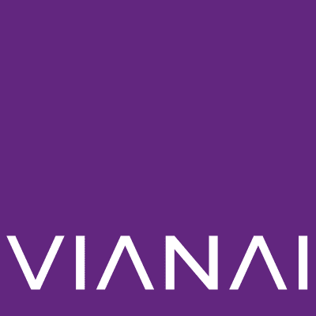
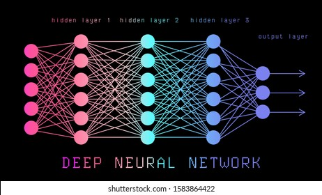
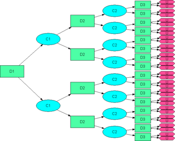
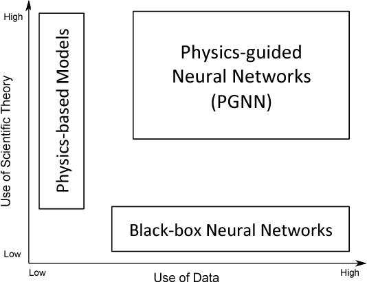
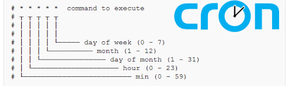
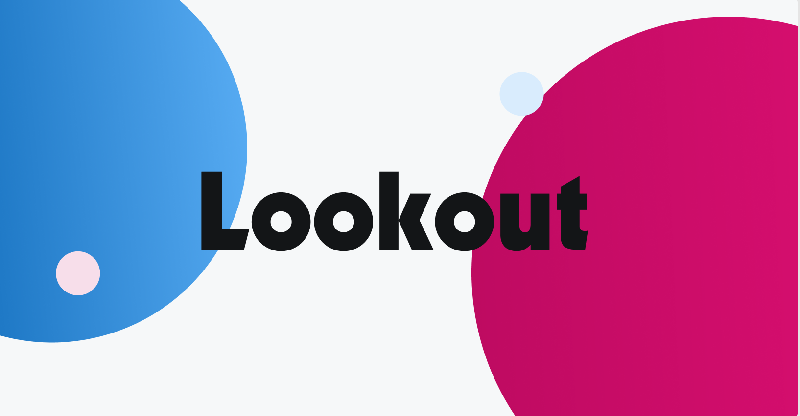
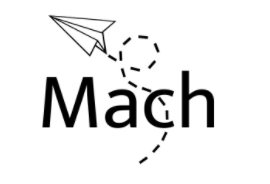

Ammar Safdari
I just finished up my degree at the University of Michigan Ann Arbor, majoring in Computer Science and Interdisciplinary Physics. Good time. If you're reading this and deciding on colleges (I don't know why that would be the case), Go Blue or go home as we like to say. My interests are a bit all over the place, but the primary ones are AI, clean energy tech, and blockchain as a tool for financial inclusivity. I have work experience as a full stack developer, AI intern, freelance software developer, and newsletter writer. If you'd like to get in touch to work on projects, happy to meet!
Work Experience

I've worked as a software intern at Vianai two summers, once my freshman year and another my junior year. The first time around, I recieved a lot of mentorship from the head of prototyping, Kevin Dunnel. Kevin guided me through the process of learning about and building sophisticated models with decision trees, Support Vector Machines, Recurrent Neural Nets, Convolutional Neural Nets, and Generative Adversarial Networks. After my training, I got the chance to work on creating a song recommendation backend service for an online marketplace connecting producers and artists using the deep learning techniques and the skills I had developed. Linked below is the open source code I wrote to assemble a song database to train and test my model for different artists. My second time around, another summer, I got to work on platform dev for Vianai's MLOPS platform, building webapps with React, backend classes in our AI library, SQL transformers for data preprocessing, and investigating/evaluating emerging techniques in the field of AI for potential integration into our suite of services.






Sandia National Labs
Battery Archive (BA)I worked as a software developer for the BatteryArchive (BA) initiative at Sandia National Labs, which is an online repository for standardized battery data. The point of BA is to provide a platform for easy analysis, visualization, and comparison of batteries across multiple insitutions. From working on BA, I have gained experience using front end and backend frameworks as well as containerization techniques (react.js, node.js, postgresql, and docker). I also have made extensive use of Python to develop data upload and download scripts using google cloud APIs for the industrial sized battery test datasets that BatterArchive needs to process. As part of my job, I've learned how to create services using the likes of Cron or systemctl that run on google cloud virtual machines to automactically deal with incoming datasets. For those very same datasets, I created scripts to parse different data formats into a common schema that is digestible by our database. Through my work, I hope to ease the developement and testing process for batteries as we work towards cost effective batteries that can support grid scale storage.




Lookout
I work as a front end developer for Lookout, a service that is looking to transform the way people manage their personal finances through an easy to use and beatiful interface that automatically tracks your income, expenses, and net worth at any given time across any different bank accounts you may have. I work in React, CSS, and HTML and have created a host of reusable components as well as the sign in/sign up flow and the myAccounts and myCash page. These last two pages present all of your personal finances summarized concisely and intuitively into two pages.



Mach
I co founded Mach with two other friends Samuel You and Nolan Kuza, two other students at UM. Mach is a new platform for exploring and having fun with friends, while also helping small businesses which are featured prominently on our platform recoup lost revenue from COVID. Mach is also intended as an altogether better form of social media, with an emphasis on physical and in person interaction and enjoyable experiences. If you are interested in learning more about Mach and how it works, we are looking for any investment opportunities so feel free to reach out to me with any questions.

Done Waiting
Done Waiting is an organization made up of volunteers advocating for sweeping progressive change across the US. They help support progressive candidates through services like phonebanking and canvassing and we only endorse candidates who swear to uphold out policies: the Green New Deal, racial justice, Medicare for all, and no corporate money in poltics. I created and used to manage our website donewaiting.org using Wix and also helped to create a custom phonebanking software system using Flask, React, and google firebase, so that we could avoid incurring cost from expensive phonebank dialers.


Fiverr
I work as a freelancer in my free time on Fiverr. Currently, I offer services in machine learning, data analysis, web scraping, data mining, and also build custom python scripts for clients. So far, I have worked on jobs featuring live facial recognition software, habitat simulation, simulated trading software, and web crawling. I have also helped various other buyers on Fiverr find solutions to their problems by referring them to toolkits or resources I am aware of. I hope to continue working on Fiverr part time once I am out of college, but in the meantime I take jobs whenever I can.
Resume
Projects

Forensics Project
We were a given a disk drive to study— looked for persistent traces in memory (bash_history, logs, ect.), learned how to retrieve info from a disk image without booting the OS, used password crackers and stegonography to recover info in random images, browsed the dark web and decrypting forums, deployed SQL injection attacks to gain access to fake websites, ect (basically a scavenger hunt with cryptography). All of this evidence and information was compiled and examined to make a determination of whether the owner of the disk drive is guilty of a crime (all pretend of course).
Forensics Project
We were a given a disk drive to study— looked for persistent traces in memory (bash_history, logs, ect.), learned how to retrieve info from a disk image without booting the OS, used password crackers and stegonography to recover info in random images, browsed the dark web and decrypting forums, deployed SQL injection attacks to gain access to fake websites, ect (basically a scavenger hunt with cryptography). All of this evidence and information was compiled and examined to make a determination of whether the owner of the disk drive is guilty of a crime (all pretend of course).

Application Security Project
An introduction to control-flow hijacking vulnerabilities in application software, including buffer overflows, integer overflows, no-op sleds, ROP Chain attacks, and more. A series of vulnerable programs was provided along with a virtual machine environment to develop exploits

SQL Injection, XSS, and CSRF Attacks
Implemented various sql injection attacks on a mock server, logging in as a user without their password by taking advantage of unsanitized inputs to insert malicious SQL code. Also devised cross site scripting attacks to steal a fake users browsing info with javascript as well as cross site forgery attacks.

MD5 Length Extension and Padding Oracle Attacks
Implemented a length extension attack on MD5 which allows an attacker to append to a mesage and compute its verifier, which will then be accepted as valid by the intended recipient. Also implemented a padding oracle attack on sha256, which allows an attacker to decode an entire message by exploiting a vulnerability in returning both a padding and invalid MAC error.

Network File Server
Created a multithreaded client-server file server to process requests to modify a filesystem. Used fine-grained, hand-over-hand reader/writer locks to protect files and directories from concurrent acccess issues. Used the traditional inode and direntries data structures to make the filesystem.

Virtual Memory Pager
Created a virtual memory pager to provide the abstraction of separate, protected adress spaces for multiple processes. Our implementation supported shared, file backed pages as well as swap back pages that are specific to a process. For physical memory eviction and page replacement we used the clock algorithm as an approximation for LRU.

C++ Threading Library
Programmed a C++ threading library that supports join, yeild, mutexes, condition variables, and multithreaded program execution on multicore processors. This library makes use of inter processor interrupts and timer interrupts as well as guards to ensure the OS can swap threads during user function execution and ensure kernel level atomicity across CPUs.

Instagram Clone
Remade instagram using a combination of static pages, server side dynamics, and client side dynaimcs. Used Flask to handle routing and API requests, jinja to render templates, and React to handle client-side processes like rendering likes and comments without a page refresh.

Multithreaded Disk Scheduling
Created a multithreaded disk scheduler with multiple synchronous requester threads and one servicer thread which handles disk requests with Shortest Seek Time First processing. This means the tracks closest to the current track in the servicer will be selected among the available tracks in the disk data strcuture.

MapReduce
Built a mapreduce framework like Hadoop for processing jobs using workers and managers using the Pyhton threads library, accounting for aspects like worker registration, UDP heartbeats, input partitioning, shutdown, fault tolerance, and more.

Search Engine
Built an end to end search engine similar to Google circa 2008 using tf-idf and PageRank. The inverted index of web pages is wrapped in index servers segmented by document with a front end that returns ranked search results.

Introduction to AI Projects
Built tree search algorithms like Breadth First Search and A* search. Implemented a Sudoku solver using Arc Consistency 3 and backtracking. Coded rejection sampling, likelihood weighting, and Gibbs sampling for approximate inference. Also implemented a decsion tree learning program.

SillyQL
Wrote a program to emulate a basic relational database with an interface based on a subset of a standard query language in C++. This was accomplished using unordered maps, hash tables, functors, and comparators.

Among Us
This project was modeled after the popular multiplayer game Among Us. The point was to understand and implement minimum spanning tree algorithms (Prim’s or Kruskal’s) and determine the most efficient path to win an Among Us game using heuristics for TSP.

Assembly Language to Machine Code Translator and Simulator
Wrote a program in C to take a spinoff, subset of ARM commands and convert them to machine code and then built a behvioural simulator to execute the commands. Works for single file inputs.

Assembler and Linker
Wrote a C program to convert assembly files into object files while also updating a symbol table which keeps track of function and variable references. Then, wrote a linker to produce a final executable for multi file programs using the symbol table.

Simulated Pipelined Processor
Wrote a C program to simulate a cycle-accurate pipelined processor for a customized subset of the ARM assembly language. The processor also had features such as data forwarding and simple branch prediction implemented.

CPU Cache Simulator
Integrated a cache with a behvioural simulator. As the processor simulator executes an assembly-language program, it will access instructions and data. These accesses will be serviced by the cache, which will transfer data to/from memory as needed, keeping track of dirty bits, and replacing cache spots based on a least recently used policy.
Classes Taken
Computer Science
EECS 281: Data Structures and Algorithms
Constructors, classes, linked lists, tree traversals, hastables, TSP, and sorting algorithms
EECS 370: Intro to Computer Organization
Assemblers, pipelines, compilers, linkers, processors, caches, and OS
EECS 376: Foundations of Computer Science
P vs. NP, recognizability, cook levin, monte carlo methods, and RSA/Diffe-Helman
EECS 445: Introduction to Machine Learning
Intro to the foundations of machine learning topics including regression, classification, kernel methods, regularization, neural networks, graphical models, and unsupervised learning.
EECS 448: Human Centered AI
Machine learning, with a focus on human behavior, across multiple modalities including speech and text. Coverage of regression methods, GMMs, HMMs, neural nets, RNNs, CNNs, autoencoders, and many other techniques.
EECS 484: Intro to Databases
SQL, MongoDB, JDBC, relational algebra, query excecution, query compiler algorithms (block nested, index nested, grace hash join, ect.), query optimization, ACID semantics, and other foundational database concepts.
EECS 485: Web Sytems
Flask, javascript, CSS, HTML, workers and managers for distributed compute and storage, and many other web systems topics
EECS 492: Intro to AI
learning agents, search, knowledge bases, bayesian nets, approximate inference, and neural nets
EECS 482: Intro to Operating System
threads, processes, memory management, file systems, distributed systems
EECS 388: Intro to Computer Security
Topics include standard cryptographic functions and protocols, threats and defenses for real-world systems, incident response, and computer forensics
EECS 441: Mobile App Development
Build a functional webapp, native app, or progressive webapp over the duration of the semester. We built a webapp that will scan smart contracts for security vulnerabilities and explain them clearly.
STATS 412: Intro to Probabilty and Statistics
Probability, statistical models, sampling models, estimation and confidence intervals, hypotheses testing, and linear regression
Physics & Math
PHYS 100-400: Intro Physics Sequence
Multivariable Calc, Linear Algebra, Diff EQ (self-study), Newtonian Mechanics, Electromagnetism, Thermodynamics, and Intro to Modern Physics
PHYS 411: Computational Physics
Code to solve problems in quantum mechanics, atomic physics, astrophysics, condensed matter, nonlinear dynamics and chaos, and more.
PHYS 401: Intermediate Classical Mechanics
Calculus of Variations, hamiltonians, lagrangians, orbits, non-intertial refernce planes, rigid body rotation, coupled oscillators, and normal modes.
Business
FIN 302: Making Financial Decisions
Understand the relationship between risk and return when investing as well as gain a general understanding of financial markets. Notable topics include valuing annuities, perpetuities, stocks and bonds, paying off loans, accounting, and capital budgeting.
ACC 471: Accounting Principles
A comprehensive overview of both financial and managerial accounting with an emphasis on company financial statements and the rules that must be followed when compiling said statements (income, tax, balance sheet, cash flows, and retained earnings)
MKT 425: New Product & Innovation Management
Teaches (a) creative techniques for idea generation, (b) fine-tuning these ideas to develop products and services that meet specific consumer needs, and (c) testing the feasibility of these ideas.
Research
Presentations
Development of Thermal Runaway Risk Database
Developed and implemented a databse schema for battery abuse data and a data importer to
collect data from different insitutions.
Research Group Involvement
Thornton Research Group (2020-2021)
Investigated various lithium ion battery configurations and modifications with the COMSOL/MATLAB Simulink
to automate data extraction, analysis, and visualization. Specifically examined graphite, hard carbon
hybrid anode batteries to determine the effect of certain battery parameters on performance measures. [ Enabling 6C fast charging of Li‐ion batteries with graphite/hard carbon hybrid anodes ]
Tol Research Group (2019-2020)
Investigated different metasurface designs for energy harvesting, localization, and redirection of mechanical waves through experimentation
and COMSOL modeling. Proposed and modeled multiple candidate metasurfaces to cut down on manufacturing costs and increase adaptibility of designs.